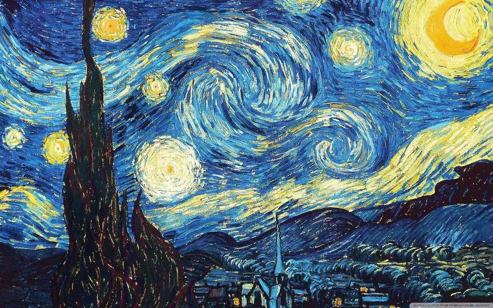
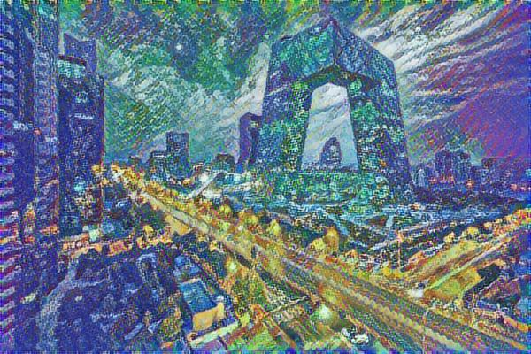
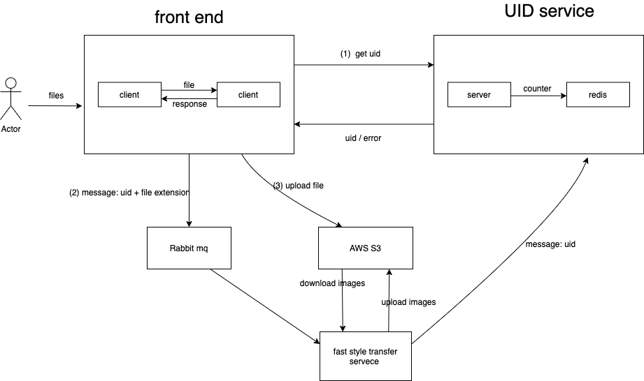

Neural Style Transfer
Project website: www.deepstyletransfer.com
You can upload two images -- one is content image, another is style image. We can transfer your content image to the style of your style image. The following is an example. The "beijing" is the content image and "starrynight" is style image. And the output is the result of apply the style of style image to the content image. The algorithm we are using is credited to Authors of the arbitrary style transfer paper and The Magenta repository for arbitrary style transfer
beijing

starrynight

transfer result
The followin is the main structure of this project.

project architecture
- The front end is displayed as the website in this link(mentioned before) and it is built in React.
- User can upload two images (one is original image, and another is the image contains style). After the front end server received the two images, it will (1) send a message to the uid server and then get a unique id and then return it the user; (2) send messege with the uid and image extension information to the Rabbit message queue; (3) upload the images to the AWS S3 (database).
- Fast style transfer server is used to run the image transfer task. The transormation algorithm uses deep learning technology. At first, it receives two string of image names, and the pull images from the AWS S3. And the run the algorithm and get the transformed image. The server would send a image to the uid server to notify that this task with the specific uid has successfully done, and also uplaod the transformed image to the AWS S3.
- The user can retrived the image using the uid he got right after he uploaded the images.
- The whole procedure from the user upload two images to retrive the transformed image is less than 1 minute.